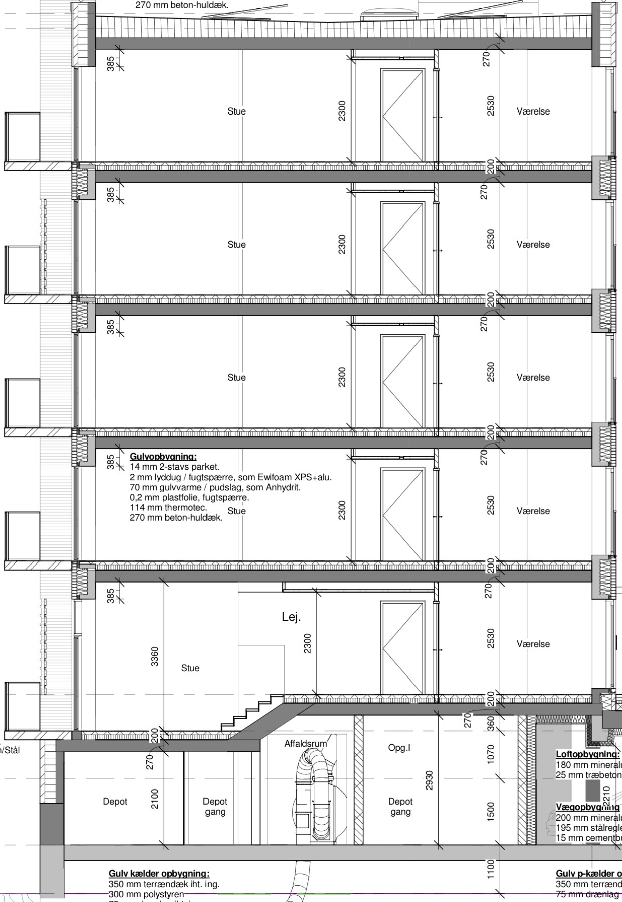
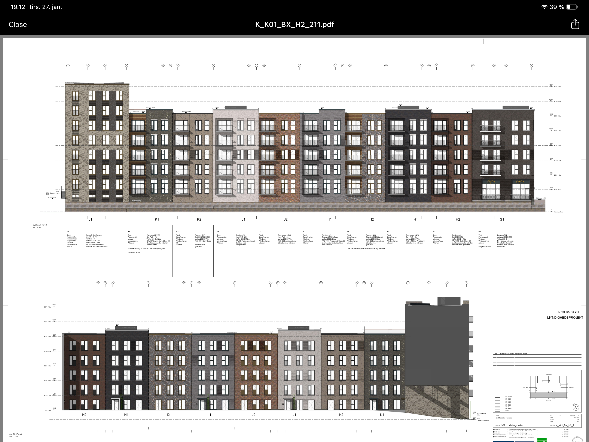
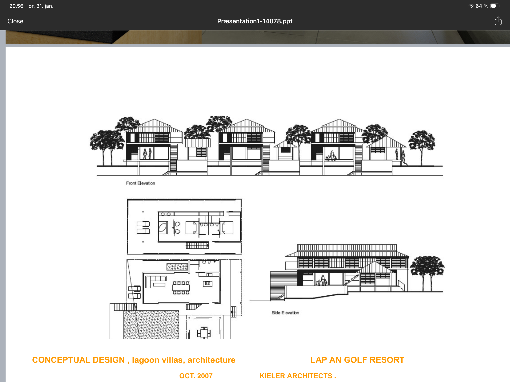
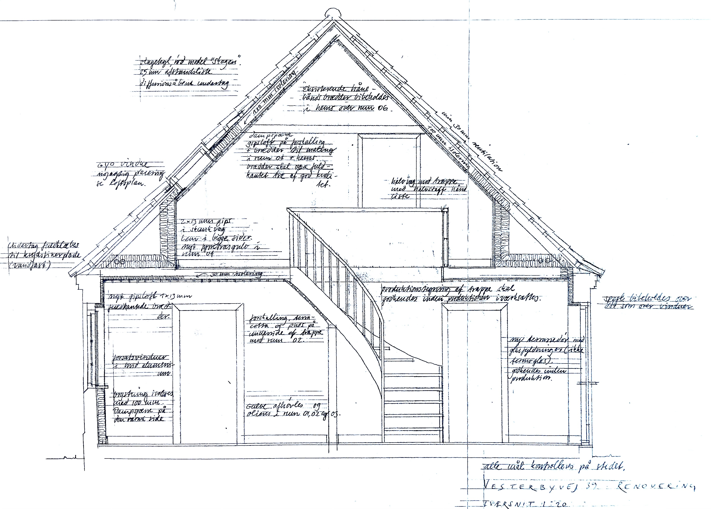
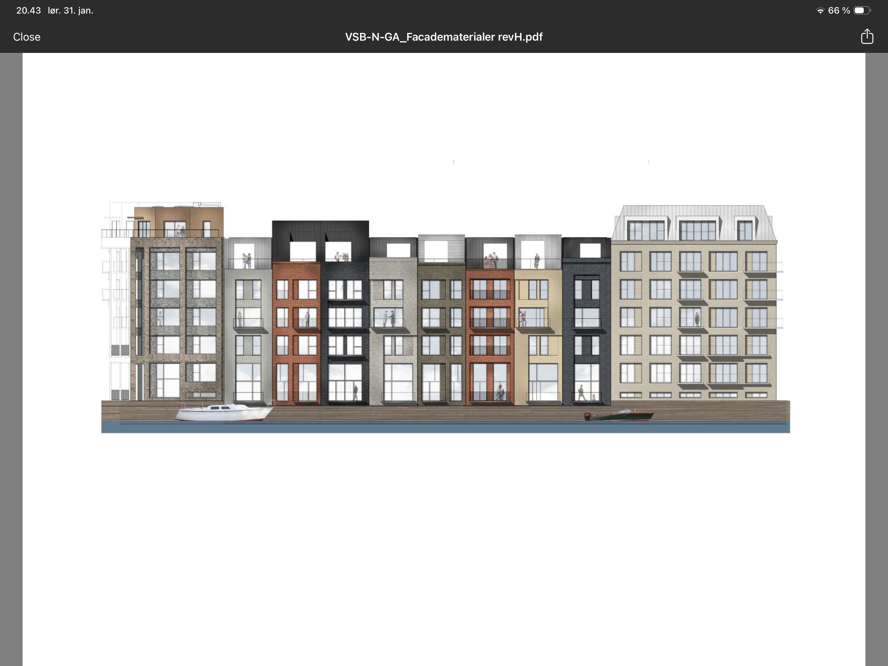
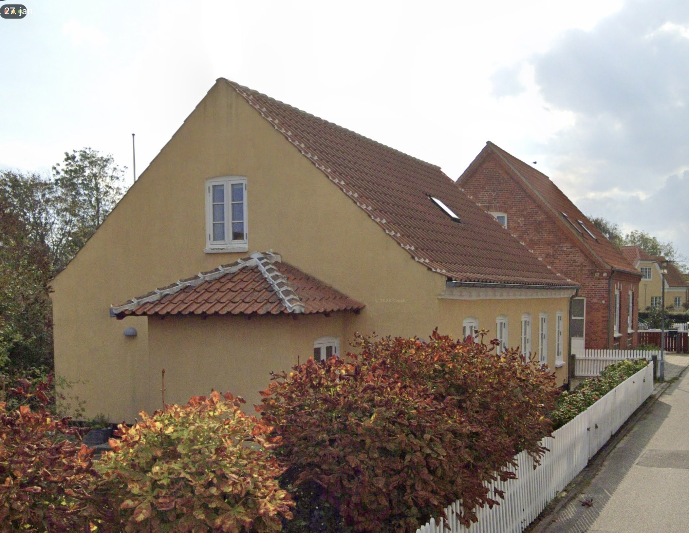

The entrance sequence is defined by compression and release, guiding
visitors from the public realm into a more intimate domestic space.

Material choices are limited to concrete, wood, and glass — allowing
light and shadow to become the primary architectural elements.




Interior spaces open toward the landscape, creating a seamless transition
between built form and nature.
